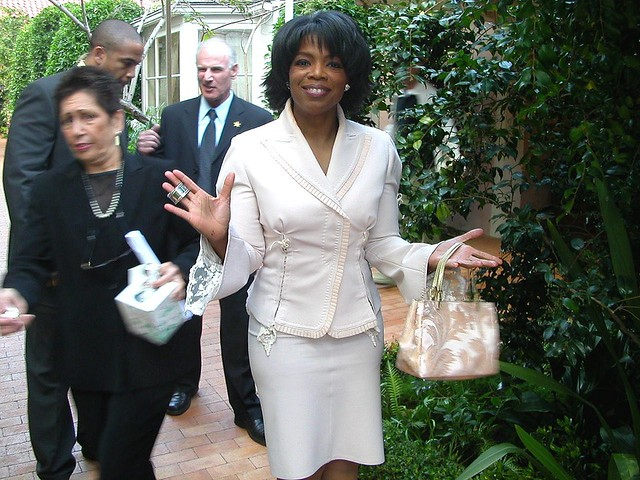

What Is the Oprah Effect?
The United States is a country riddled with a dark history of racism and gender inequality. In a country where white men make the rules, I have delved deep into the history of literacy as power to understand how one makes it in the world. My main subject in this research is Oprah Winfrey, an African American woman who is also a multi-billionaire who grew up in poverty. However, I’m sure most already know this due to the fact that she is an A-List celebrity. For my research project I have chosen to research, understand, and present to my readers why and how Oprah Winfrey became so successful in a country where the odds were not in her favor. I will explore her stance on Black feminism, her ability to capitalize on her impoverished upbringing, and her strategies for making reading lively again in a world obsessed with technology. I will also look into how she has used her power as a celebrity to promote feminism, specifically Black feminism.
The Oprah Effect refers to the commercial success of any business or person promoted on Oprah Winfrey’s daytime talk show, The Oprah Winfrey Show, which ran from 1986 to 2011. According to Market Business News, “because of Oprah’s massive fan base, a recommendation from her was a Godsend for a struggling or new business.” With forty-two million viewers and an airtime of twenty-five years, Oprah Winfrey has launched successful careers for many products and people such as Dr. Phil, Suze Orman, Weight Watchers, and the Presidential Election of former President of the United States Barack Obama.
However, along with launching careers, she has also caused an economic drop in certain parts of the business world simply by preaching her beliefs on the subject. The influence that Oprah Winfrey holds has coerced viewers into causing outrage so widespread that it caused a lawsuit. This lawsuit took place in January-February 1998 for the trial of the Texas Beef Group et al, Paul Engler, and Cactus Feeders vs. Oprah Winfrey, Harpo Productions, Inc., Howard Lyman, and King World Productions, Inc. After hosting a show speaking on her worries of Bovine Spongiform Encephalopathy, commonly known as the mad cow disease, Paul Engler, Cactus Growers, and Texas Feed Group “claimed the statements disparaged the American cattle industry and the safety of American beef, causing millions of dollars in losses for themselves” (Hayenga 13). However, at the end of the trial, all charges were dismissed.